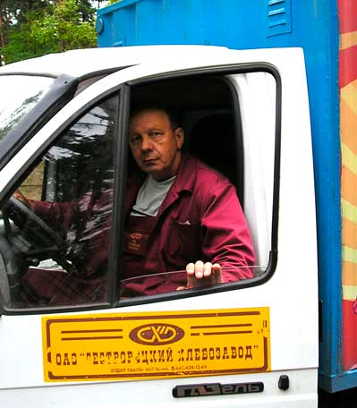

Товарищи рабочие,
вступайте в Рабочую партию России!
Н.П.Французов, водитель,
член Рабочей партии России

Мне 69 лет, и я почти всю жизнь проработал водителем. Из них 28 лет проработал в Советском и 28 лет в капиталистическом государстве. Поэтому мне есть и что вспомнить, и с чем сравнивать. Переход был не резким, постепенным, но какая поразительная разница наступила между прошлым и настоящим. Ведь мы жили как у «Христа за пазухой». Работа была всегда и у всех, хорошая зарплата. Государство выдало моей семье трехкомнатную квартиру. Была машина, кооперативный гараж, бесплатный земельный участок. Лечение, любое обучение —бесплатные. А отдых во время отпуска был почти бесплатный, большую часть оплачивал профсоюз.
На работе мы были полностью защищены, строго соблюдались Трудовой договор и Трудовой Кодекс — КЗОТ. Мы к этому привыкли, казалось, что так будет всегда. Но мы плохо ценили то, что имели.
И только тогда, когда этого не стало, я понял, что мы потеряли! Ведь государство было для нас, для рабочих. И целью этого государства было обеспечение полного благосостояния и свободное всестороннее развитие всех членов общества.
А какая идеология нынешнего буржуазного государства? Цель — прибыль, личная максимальна нажива любой ценой, невзирая ни на что. А если в этом мешает мораль, то ее убирают.
И что мы сейчас видим? Буржуазия нас раздробила, почти нет больших сплоченных предприятий, нас перемешали с иностранными рабочими, у которых свои интересы, и у них с нами нет солидарности. Нас обманывают с зарплатой, постоянно обязывают выполнять работы, не обусловленные трудовым договором. А такой труд уже похож на рабский. Владелец нашего транспортного предприятия на его развитие выделяет жалкие гроши. Администрация не в состоянии обеспечить содержание транспорта в надлежащем состоянии, не говоря уже о замене давно уже выходивших свои ресурсы автомашин.
Нас закабалили кредитами и ипотеками. Мы находимся под постоянным страхом потерять возможность их оплачивать. Гнетет неуверенность в завтрашнем дне.
Мы — рабочие все это осознаем, жалуемся друг другу на невыносимые условия и, не находя выхода из создавшейся ситуации, продолжаем терпеть эту нещадную эксплуатацию, несмотря на то, что нас — огромное большинство. Но мы чего-то ждем, когда кто-то за нас что-то сделает. А если люди не борются за свои интересы, то их постоянно ущемляют.
По своему опыту знаю, что даже через профсоюзы, объединившись, можно добиться многого. И есть общественное объединение — Рабочая партия России, в которой собрались умные, грамотные люди, хорошо знающие законы, готовые в любое время помочь рабочим научиться добиваться лучшей жизни, почувствовать себя настоящими людьми.
Вступайте в ряды РПР и, объединившись, мы улучшим свою жизнь.
|